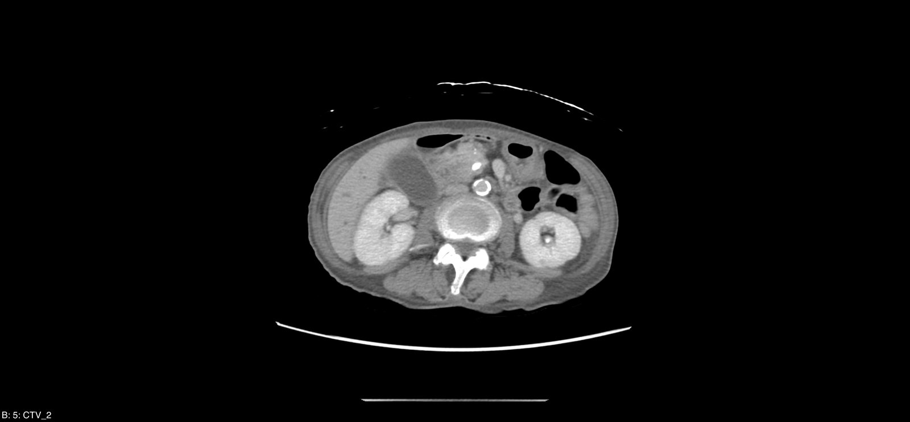
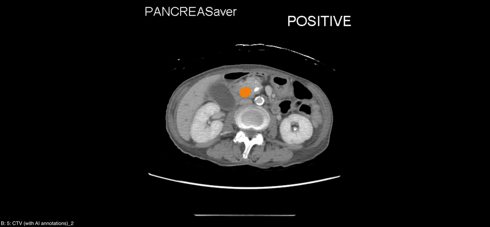

AI 鎖定
同一張 CT，兩種視野
左側是放射科醫師看到的原始影像；右側是 PANCREASaver 的判讀——病灶被橘色警示框精準鎖定。

AI 鎖定病灶
肉眼判讀
PANCREASaver® AI 判讀
全球首創全自動化胰臟癌 CT AI 輔助偵測系統——在每一次掃描中，主動攔截 <2cm 的早期病灶，為病患爭取黃金治療期。
70 餘歲的陳女士，接受例行腹部 CT。放射科醫師肉眼判讀未見異常——然而在胰臟尾部，一個 1.8 公分的早期病灶，正無聲地存在。
PANCREASaver 在同一組影像上完成判讀，判定陽性，並以橘色警示框精準標示病灶位置。放射科醫師回頭檢視——病灶確實存在，肉眼難以察覺。


早期胰臟癌的五年存活率可達 80%——是晚期確診的十倍以上。陳女士順利完成手術，回到日常生活。一個 1.8 公分的發現，改寫了她的未來。
60 餘歲的許女士，內視鏡超音波與活檢均為偽陰性。PANCREASaver 精準定位 1cm 病灶，手術證實為胰臟癌——這是一場與時間的競賽，而 AI 贏下了關鍵的一局。
來自真實臨床場域的驗證——不是實驗室承諾，而是已經發生的結果。
<2cm 早期腫瘤敏感度
全國 1,473 例真實世界研究 AUC
AI 揪回放射科醫師漏診病例
累積臨床輔助判讀人次
左側是放射科醫師看到的原始影像；右側是 PANCREASaver 的判讀——病灶被橘色警示框精準鎖定。
每一項認證，都是讓早期發現成為常態的承諾。


台美 10 件發明專利 · 5 篇國際頂尖期刊 · 9 項國內外大獎
無論您是患者、醫療機構或健檢中心，這裡都有屬於您的答案。